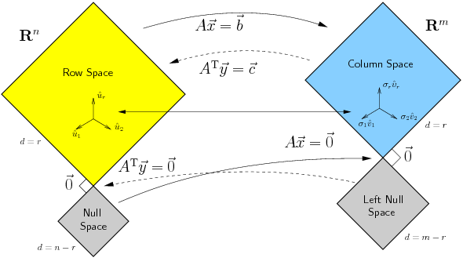

Em outro horário, agende por email

Código MCTB001-13 (BC 1425) TPI 6-0-5 Recomendações Geometria Analítica Horário 2ª as 10hs na 211-0, 4ª 08hs na 104-0 e 6ª as 10hs na 211-0. Monitoria
- Quarta, 13-15 horas, Santo André - SALA S-304-1
- Sexta, 16-18 horas, São Bernardo do Campo - SALA A2 - S306.
- Segunda das 17:30 às 18:30 horas, SA, Bloco A, Sala S-006-0
- Terça das 17:30 às 18:30 horas, SA, Bloco A, Sala A-101-0
- Quarta das 17-19 horas, SA, Bloco A, Sala S-303-1
Referências [+]
- T. Apostol, Calculus, volume II. Ed. Wiley, 1969.
[515.15 APOc2].
Em Português Cálculo II. Ed. Reverté [515.15 APOSca] - Gilbert Strang, Álgebra Linear e suas aplicações [512.5 STRAal]
Bibliografia básica
TRÊS PROVAS: 07/03, 04/04, 04/05.
Links
- How Google Converted Language Translation Into a Problem of Vector Space Mathematics
- A Linear Algebraic Approach to Kalman Filtering(precisa de IP autorizado)
- Motivating the concept of eigenvectors via cryptography
- The $25,000,000,000 eigenvector. The linear algebra behind Google
- The Reduced Row Echelon Form of a Matrix is Unique: A Simple Proof, Thomas Yuster [pdf] (uma demonstração simples de que a forma reduzida escalonada por linhas de uma matrix é única)
- Matrizes no Wolfram alpha
- Why study finite-dimensional vector spaces in the abstract if they are all isomorphic to Rn?
- Provas anteriores

- semana 01 -- Administrativia. Motivação. [slides (atenção, tem erros corrigidos só em sala)] Espaço Vetorial. Subespaço. Lista 1
- semana 02 -- Combinação Linear. Dependência/Independência Linear. Base. Dimensão. Lista 2
- semana 03 -- Sistemas Lineares. Matrizes: subespaços associados, posto, nulidade.Lista 3
- semana 04 --
prova
Transformações Lineares. Núcleo e Imagem, posto e nulidade de Transformações Lineares. Lista 4 - semana 05 -- Transformações Lineares: Teorema do posto. Matrizes e transformações Lineares. Matriz mudança de base.
- semana 06 -- Espaço vetorial das transformações. Lista 5
- semana 07 -- Matrizes: inversas; elementares. Aula de exercícios.
- semana 08 -- prova Determinantes.
- semana 09 -- Determinantes. Lista 6
- semana 10 -- Autovalores e autovetores.
- semana 11 -- Autovalores e autovetores. Diagonalização. Lista 7
- semana 12 -- prova prova sub